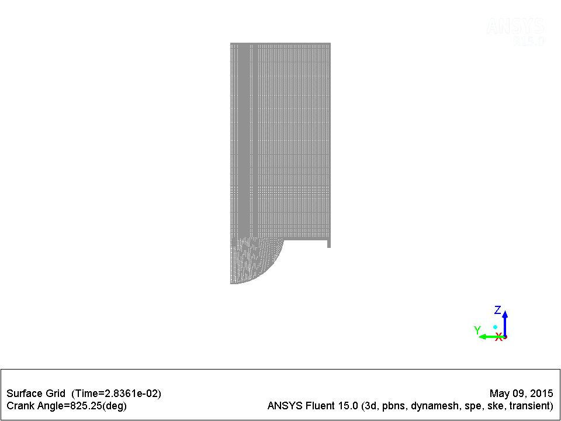

Title
IC Engine Combustion Simulation Report
Date
2015/05/10 19:30:00
1. File Report
Table 1 File Information for Sector_Act_t02
2. Mesh Report
Table 2 Mesh Information for Sector_Act_t02
Table 3 Cell count at crank angles
3. Setup
3.1. Physics
Table 4 Boundary Conditions
3.2. Relaxations
Table 5 Relaxations at crank angles
3.3. Dynamic Mesh Setup
Table 6 Dynamic Mesh Events
3.4. IC Engine System Inputs
4. Solution Data
4.1. Animation: mesh-on-ice_cutplane_1
4.2. Animation: pt-temperature on ice-cyl-chamber-bottom, ice-cyl-chamber-top, ice-cyl-piston, ice-piston, ice-sector-top-faces
4.3. Animation: pt-velocity-magnitude on ice-cyl-chamber-bottom, ice-cyl-chamber-top, ice-cyl-piston, ice-piston, ice-sector-top-faces
4.4. Animation: temperature on ice_cutplane_1
4.5. Animation: velocity-magnitude on ice_cutplane_1
4.6. Table: mesh-on-ice_cutplane_1
4.7. Table: pt-temperature on ice-cyl-chamber-bottom, ice-cyl-chamber-top, ice-cyl-piston, ice-piston, ice-sector-top-faces
4.8. Table: pt-velocity-magnitude on ice-cyl-chamber-bottom, ice-cyl-chamber-top, ice-cyl-piston, ice-piston, ice-sector-top-faces
4.9. Table: temperature on ice_cutplane_1
4.10. Table: velocity-magnitude on ice_cutplane_1
4.11. Charts
Chart 1 Swirl Ratio
Chart 2 Tumble Ratio
Chart 3 Cross Tumble Ratio
Chart 4 Apparent Heat Release Rate on (ice-fluid-chamber-bottom ice-fluid-chamber-top ice-fluid-piston)
Chart 5 Number of Iterations per Time Step
Chart 6 Monitor: Mass-Average Turbulent Kinetic Energy (k) (ice-fluid-piston ice-fluid-chamber-top ice-fluid-chamber-bottom)
Chart 7 Monitor: Volume Integral Density (ice-fluid-piston ice-fluid-chamber-top ice-fluid-chamber-bottom)
Chart 8 Monitor: Max Static Pressure (ice-fluid-piston ice-fluid-chamber-top ice-fluid-chamber-bottom)
Chart 9 Monitor: Max Static Temperature (ice-fluid-piston ice-fluid-chamber-top ice-fluid-chamber-bottom)
Chart 10 Monitor: Max Velocity Magnitude (ice-fluid-piston ice-fluid-chamber-top ice-fluid-chamber-bottom)
Chart 11 Penetration length of injection-0 per Time Step
Chart 12 Monitor: Volume-Average Static Pressure (ice-fluid-piston ice-fluid-chamber-top ice-fluid-chamber-bottom)
Chart 13 Monitor: Volume Integral Static Temperature (ice-fluid-piston ice-fluid-chamber-top ice-fluid-chamber-bottom)
Chart 14 Monitor: Volume (ice-fluid-piston ice-fluid-chamber-top ice-fluid-chamber-bottom)
| Case | Sector_Act_t02 |
| File Path | G:\Project_Azy\28 March ICE tarun sir\Sector Flow_D\Sector_Act_files\dp0\ICE-1\Fluent\ICE-1-1-01482.dat.gz |
| File Date | 10 May 2015 |
| File Time | 07:26:53 PM |
| File Type | FLUENT |
| File Version | 15.0.7 |
| Domain | Nodes | Elements |
| ice fluid chamber bottom | 1178498 | 1140189 |
| ice fluid chamber top | 22028 | 16059 |
| ice fluid piston | 127207 | 117504 |
| All Domains | 1327733 | 1273752 |
| Crank Angle | Cell Count |
| 0.000e+00 | 1.550e+05 |
| Type | Zones | Values |
| wall | ice-cyl-chamber-bottom | Temperature (k) 567 |
| wall | ice-cyl-chamber-top | Temperature (k) 567 |
| wall | ice-cyl-piston | Temperature (k) 567 |
| wall | ice-piston | Temperature (k) 645 |
| wall | ice-sector-top-faces | Temperature (k) 602 |
| Crank Angle | Pressure | Density | Body Forces | Momentum | Turbulent Kinetic Energy | Turbulent Dissipation Rate | Turbulent Viscosity | Species | Energy | Discrete Phase Sources |
| 0.000 | 0.300 | 1.000 | 1.000 | 0.500 | 0.400 | 0.400 | 1.000 | 1.000 | 1.000 | 1.000 |
| At Crank Angle (deg) | Name | Description |
| 721.000 | reduce-dt-injection-0(0.05), enable-pt-cal-act-for-injection-0 | |
| 742.500 | increase-dt-injection-0(0.25), disable-pt-cal-act-for-injection-0 |
Engine Inputs
Engine Speed (rev/min) : 1500
Crank Radius (mm) : 55
Piston Pin Offset/Wrench (mm) : 0
Connecting Rod Length (mm) : 232.5
-
Journal Customization
Pre Iteration Journal File : N/A
Post Iteration Journal File : N/A


 | ||
 | ||
|  |
 | ||
| Chart 1. Swirl Ratio |
 |
| Chart 2. Tumble Ratio |
 |
| Chart 3. Cross Tumble Ratio |
| Chart 4. Apparent Heat Release Rate on (ice-fluid-chamber-bottom ice-fluid-chamber-top ice-fluid-piston) |
 |
| Chart 5. Number of Iterations per Time Step |
| Chart 6. Monitor: Mass-Average Turbulent Kinetic Energy (k) (ice-fluid-piston ice-fluid-chamber-top ice-fluid-chamber-bottom) |
| Chart 7. Monitor: Volume Integral Density (ice-fluid-piston ice-fluid-chamber-top ice-fluid-chamber-bottom) |
| Chart 8. Monitor: Max Static Pressure (ice-fluid-piston ice-fluid-chamber-top ice-fluid-chamber-bottom) |
| Chart 9. Monitor: Max Static Temperature (ice-fluid-piston ice-fluid-chamber-top ice-fluid-chamber-bottom) |
| Chart 10. Monitor: Max Velocity Magnitude (ice-fluid-piston ice-fluid-chamber-top ice-fluid-chamber-bottom) |
 |
| Chart 11. Penetration length of injection-0 per Time Step |
| Chart 12. Monitor: Volume-Average Static Pressure (ice-fluid-piston ice-fluid-chamber-top ice-fluid-chamber-bottom) |
| Chart 13. Monitor: Volume Integral Static Temperature (ice-fluid-piston ice-fluid-chamber-top ice-fluid-chamber-bottom) |
| Chart 14. Monitor: Volume (ice-fluid-piston ice-fluid-chamber-top ice-fluid-chamber-bottom) |